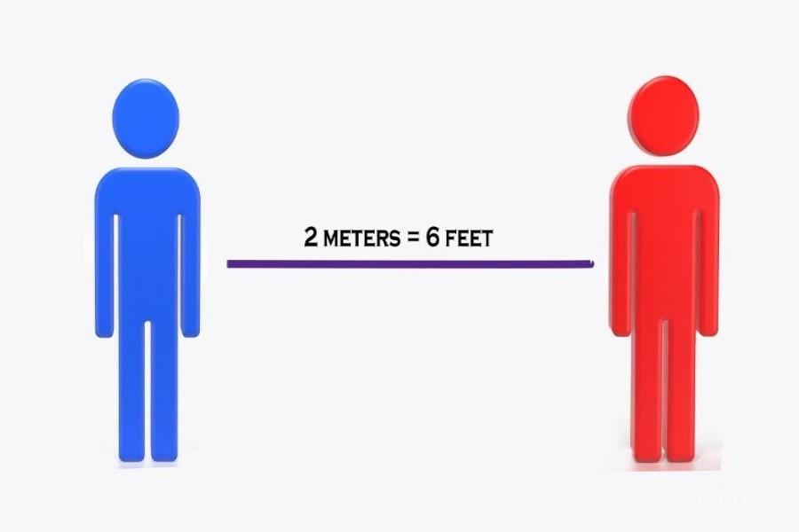
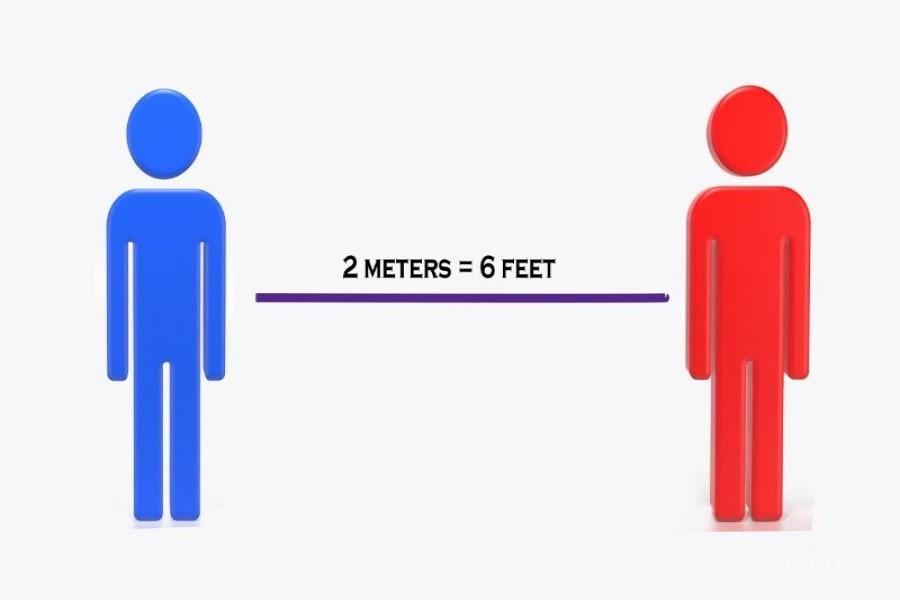
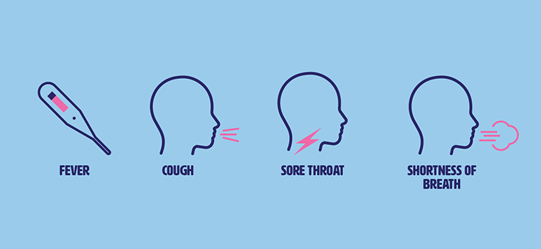
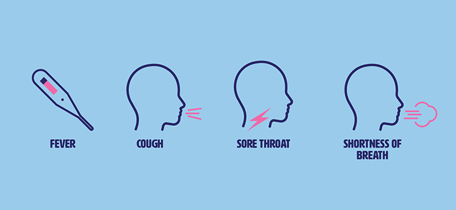

• Regularly and thoroughly clean your hands with an alcoholbased hand rub or wash them with soap and water.
 • Maintain at least 2 metre (6 feet) distance between yourself and anyone who is coughing or sneezing.

• Avoid touching eyes, nose and mouth.
• Maintain at least 2 metre (6 feet) distance between yourself and anyone who is coughing or sneezing.

• Avoid touching eyes, nose and mouth.
 • Make sure you, and the people around you, follow good respiratory hygiene. This means covering your mouth and nose with your bent elbow or tissue when you cough or sneeze. Then dispose of the used tissue immediately.
• Make sure you, and the people around you, follow good respiratory hygiene. This means covering your mouth and nose with your bent elbow or tissue when you cough or sneeze. Then dispose of the used tissue immediately.
 • Stay home if you feel unwell. If you have a fever, cough and difficulty breathing, seek medical attention and call in advance. Follow the directions of your local health authority.

• Stay home if you feel unwell. If you have a fever, cough and difficulty breathing, seek medical attention and call in advance. Follow the directions of your local health authority.
